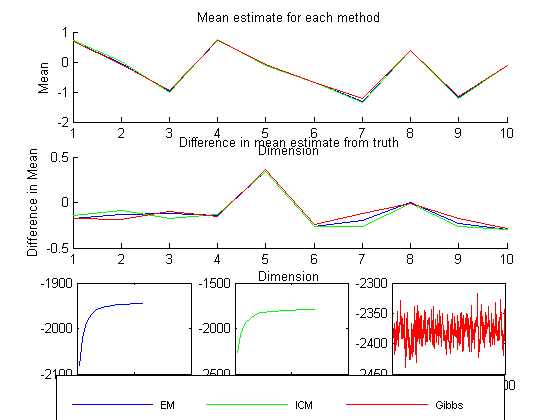

Compare the results of imputation on a MVN using three imputation methods: EM, ICM, and Gibbs
setSeed(1);
d = 10; n = 100;
mu = randn(d,1); Sigma = randpd(d);
pcMissing = 0.2;
model = struct('mu', mu, 'Sigma', Sigma);
Xfull = gaussSample(model, n);
missing = rand(n,d) < pcMissing;
Xmiss = Xfull;
Xmiss(missing) = NaN;
Xhid = Xfull;
Xhid(~missing) = NaN;
verb = true;
fprintf('EM First\n')
[model, LLtrace{1}] = gaussMissingFitEm(Xmiss, 'verbose', verb, 'maxIter', 500);
[muHat{1}, SigmaHat{1}] = structvals(model);
fprintf('Now ICM\n')
[model, LLtrace{2}] = gaussMissingFitICM(Xmiss, 'verbose', verb);
muHat{2} = model.mu;
SigmaHat{2} = model.Sigma;
fprintf('Now Gibbs\n')
[model, dataSamples, LLtrace{3}] = gaussMissingFitGibbs(Xmiss, 'mu0', nanmean(Xmiss), 'Lambda0', diag(nanvar(Xmiss)), 'k0', 0.01, 'dof', d + 2, 'verbose', verb);
muSamples = model.mu; SigmaSamples = model.Sigma;
muHat{3} = mean(muSamples);
SigmaHat{3} = mean(SigmaSamples,3);
method = {'EM', 'ICM', 'Gibbs'};
fprintf('True mean:\t\t %s\n', mat2str(rowvec(mu),2))
for m=1:length(method)
fprintf('Mean for method %s:\t %s\n', method{m}, mat2str(rowvec(muHat{m}),2))
end
plotOpts = {'b','g','r'};
figure(); subplot(3,3,1:3); hold on;
for m=1:length(method)
plot(1:d, rowvec(muHat{m}), plotOpts{m})
end
xlabel('Dimension'); ylabel('Mean');
title('Mean estimate for each method');
subplot(3,3,4:6); hold on;
for m=1:length(method)
plot(1:d, rowvec(muHat{m}) - rowvec(mu), plotOpts{m});
end
xlabel('Dimension'); ylabel('Difference in Mean');
title('Difference in mean estimate from truth');
a = zeros(3,4);
for m=1:length(method)
subplot(3,3,6+m);
h{m} = plot(LLtrace{m}, plotOpts{m});
a(m,:) = axis;
set(gca,'XTickLabel',num2str(get(gca,'XTick').'));
set(gca,'YTickLabel',num2str(get(gca,'YTick').'))
end
subplot(3,3,[1:3]);
L = legend(method);
set(L, 'position', [0.1, 0.02, 0.8, 0.03]);
set(L, 'fontsize', 8);
set(L, 'orientation', 'horizontal');
EM First
1: LL = -2080.407
2: LL = -2022.980
3: LL = -1994.256
4: LL = -1978.573
5: LL = -1969.137
6: LL = -1962.982
7: LL = -1958.750
8: LL = -1955.739
9: LL = -1953.536
10: LL = -1951.881
11: LL = -1950.608
12: LL = -1949.607
13: LL = -1948.802
14: LL = -1948.144
15: LL = -1947.599
16: LL = -1947.140
17: LL = -1946.749
18: LL = -1946.414
19: LL = -1946.123
20: LL = -1945.870
21: LL = -1945.647
22: LL = -1945.450
23: LL = -1945.275
Now ICM
1: LL = -2265.939
2: LL = -2070.704
3: LL = -1975.069
4: LL = -1928.008
5: LL = -1903.059
6: LL = -1880.911
7: LL = -1856.220
8: LL = -1837.670
9: LL = -1829.118
10: LL = -1824.069
11: LL = -1819.984
12: LL = -1816.417
13: LL = -1813.246
14: LL = -1810.407
15: LL = -1807.860
16: LL = -1805.572
17: LL = -1803.516
18: LL = -1801.669
19: LL = -1800.008
20: LL = -1798.516
21: LL = -1797.175
22: LL = -1795.970
23: LL = -1794.885
24: LL = -1793.909
25: LL = -1793.029
26: LL = -1792.235
27: LL = -1791.518
28: LL = -1790.869
Now Gibbs
1: LL = -2367.204
2: LL = -2357.196
3: LL = -2369.764
4: LL = -2371.906
5: LL = -2374.344
6: LL = -2375.462
7: LL = -2390.594
8: LL = -2379.218
9: LL = -2379.061
10: LL = -2366.601
11: LL = -2381.305
12: LL = -2392.727
13: LL = -2418.132
14: LL = -2405.283
15: LL = -2403.043
16: LL = -2375.845
17: LL = -2383.962
18: LL = -2401.097
19: LL = -2396.012
20: LL = -2378.494
21: LL = -2365.934
22: LL = -2377.344
23: LL = -2346.827
24: LL = -2373.482
25: LL = -2374.110
26: LL = -2383.798
27: LL = -2404.520
28: LL = -2379.506
29: LL = -2371.922
30: LL = -2371.940
31: LL = -2380.997
32: LL = -2375.064
33: LL = -2367.038
34: LL = -2378.594
35: LL = -2376.683
36: LL = -2351.883
37: LL = -2340.490
38: LL = -2328.788
39: LL = -2345.476
40: LL = -2391.491
41: LL = -2390.775
42: LL = -2382.034
43: LL = -2368.476
44: LL = -2354.731
45: LL = -2370.332
46: LL = -2377.485
47: LL = -2391.506
48: LL = -2358.486
49: LL = -2383.893
50: LL = -2383.297
51: LL = -2368.071
52: LL = -2370.324
53: LL = -2373.124
54: LL = -2408.237
55: LL = -2378.259
56: LL = -2350.736
57: LL = -2377.438
58: LL = -2438.683
59: LL = -2426.757
60: LL = -2416.068
61: LL = -2392.258
62: LL = -2420.470
63: LL = -2392.813
64: LL = -2394.058
65: LL = -2389.703
66: LL = -2358.019
67: LL = -2390.498
68: LL = -2348.750
69: LL = -2371.108
70: LL = -2382.488
71: LL = -2403.072
72: LL = -2378.893
73: LL = -2377.321
74: LL = -2403.442
75: LL = -2406.909
76: LL = -2402.752
77: LL = -2425.812
78: LL = -2389.304
79: LL = -2421.901
80: LL = -2405.823
81: LL = -2418.675
82: LL = -2403.316
83: LL = -2414.354
84: LL = -2425.334
85: LL = -2407.709
86: LL = -2398.691
87: LL = -2366.135
88: LL = -2383.109
89: LL = -2415.309
90: LL = -2396.970
91: LL = -2376.718
92: LL = -2421.178
93: LL = -2404.827
94: LL = -2385.334
95: LL = -2390.626
96: LL = -2369.111
97: LL = -2404.350
98: LL = -2372.376
99: LL = -2362.737
100: LL = -2353.767
101: LL = -2338.365
102: LL = -2394.666
103: LL = -2363.885
104: LL = -2369.742
105: LL = -2361.916
106: LL = -2404.792
107: LL = -2430.868
108: LL = -2372.446
109: LL = -2392.229
110: LL = -2359.742
111: LL = -2337.723
112: LL = -2362.881
113: LL = -2375.727
114: LL = -2393.255
115: LL = -2396.564
116: LL = -2383.990
117: LL = -2390.821
118: LL = -2373.203
119: LL = -2346.523
120: LL = -2366.674
121: LL = -2382.064
122: LL = -2399.719
123: LL = -2395.769
124: LL = -2355.619
125: LL = -2375.238
126: LL = -2362.880
127: LL = -2361.734
128: LL = -2380.431
129: LL = -2403.772
130: LL = -2361.347
131: LL = -2353.448
132: LL = -2369.709
133: LL = -2379.402
134: LL = -2399.600
135: LL = -2404.752
136: LL = -2380.583
137: LL = -2388.964
138: LL = -2383.742
139: LL = -2361.742
140: LL = -2375.047
141: LL = -2390.009
142: LL = -2378.326
143: LL = -2364.888
144: LL = -2351.988
145: LL = -2345.266
146: LL = -2372.362
147: LL = -2349.108
148: LL = -2349.926
149: LL = -2388.749
150: LL = -2401.254
151: LL = -2392.370
152: LL = -2376.729
153: LL = -2380.148
154: LL = -2393.625
155: LL = -2368.235
156: LL = -2381.622
157: LL = -2396.839
158: LL = -2362.480
159: LL = -2375.794
160: LL = -2359.231
161: LL = -2363.303
162: LL = -2368.153
163: LL = -2360.911
164: LL = -2366.367
165: LL = -2393.071
166: LL = -2386.868
167: LL = -2356.245
168: LL = -2365.535
169: LL = -2388.177
170: LL = -2391.364
171: LL = -2396.934
172: LL = -2375.585
173: LL = -2382.461
174: LL = -2372.369
175: LL = -2369.162
176: LL = -2344.194
177: LL = -2395.735
178: LL = -2398.866
179: LL = -2401.279
180: LL = -2384.323
181: LL = -2382.692
182: LL = -2339.329
183: LL = -2372.509
184: LL = -2365.773
185: LL = -2402.492
186: LL = -2407.149
187: LL = -2386.703
188: LL = -2387.287
189: LL = -2376.871
190: LL = -2385.549
191: LL = -2383.282
192: LL = -2376.782
193: LL = -2381.914
194: LL = -2360.944
195: LL = -2376.293
196: LL = -2378.231
197: LL = -2380.484
198: LL = -2378.352
199: LL = -2398.705
200: LL = -2377.333
201: LL = -2374.314
202: LL = -2352.686
203: LL = -2359.443
204: LL = -2370.641
205: LL = -2372.705
206: LL = -2401.028
207: LL = -2375.076
208: LL = -2363.226
209: LL = -2379.137
210: LL = -2386.395
211: LL = -2345.408
212: LL = -2358.811
213: LL = -2354.927
214: LL = -2355.860
215: LL = -2384.860
216: LL = -2374.421
217: LL = -2404.379
218: LL = -2395.976
219: LL = -2403.171
220: LL = -2374.859
221: LL = -2384.111
222: LL = -2350.924
223: LL = -2351.363
224: LL = -2363.778
225: LL = -2359.064
226: LL = -2377.829
227: LL = -2376.853
228: LL = -2376.303
229: LL = -2389.759
230: LL = -2394.821
231: LL = -2394.177
232: LL = -2390.934
233: LL = -2378.819
234: LL = -2392.292
235: LL = -2387.948
236: LL = -2408.408
237: LL = -2404.546
238: LL = -2386.776
239: LL = -2398.788
240: LL = -2385.387
241: LL = -2417.309
242: LL = -2388.846
243: LL = -2378.449
244: LL = -2392.968
245: LL = -2351.206
246: LL = -2356.940
247: LL = -2369.294
248: LL = -2389.071
249: LL = -2394.647
250: LL = -2363.648
251: LL = -2394.139
252: LL = -2387.027
253: LL = -2406.834
254: LL = -2407.307
255: LL = -2406.814
256: LL = -2396.778
257: LL = -2416.445
258: LL = -2370.734
259: LL = -2390.968
260: LL = -2375.092
261: LL = -2373.100
262: LL = -2359.988
263: LL = -2372.474
264: LL = -2398.343
265: LL = -2390.611
266: LL = -2350.317
267: LL = -2384.002
268: LL = -2384.183
269: LL = -2382.070
270: LL = -2385.626
271: LL = -2397.368
272: LL = -2406.358
273: LL = -2376.227
274: LL = -2387.590
275: LL = -2377.583
276: LL = -2387.115
277: LL = -2354.858
278: LL = -2362.302
279: LL = -2368.382
280: LL = -2387.428
281: LL = -2371.492
282: LL = -2370.144
283: LL = -2383.308
284: LL = -2381.530
285: LL = -2379.232
286: LL = -2390.541
287: LL = -2380.142
288: LL = -2375.651
289: LL = -2359.860
290: LL = -2354.318
291: LL = -2370.023
292: LL = -2409.013
293: LL = -2371.858
294: LL = -2397.438
295: LL = -2381.744
296: LL = -2362.808
297: LL = -2395.488
298: LL = -2403.062
299: LL = -2372.585
300: LL = -2393.839
301: LL = -2400.447
302: LL = -2364.516
303: LL = -2372.057
304: LL = -2362.211
305: LL = -2350.114
306: LL = -2374.557
307: LL = -2353.231
308: LL = -2347.949
309: LL = -2364.748
310: LL = -2359.229
311: LL = -2378.503
312: LL = -2364.118
313: LL = -2393.609
314: LL = -2412.789
315: LL = -2408.886
316: LL = -2393.374
317: LL = -2364.697
318: LL = -2352.912
319: LL = -2382.049
320: LL = -2384.852
321: LL = -2372.899
322: LL = -2375.977
323: LL = -2388.293
324: LL = -2372.118
325: LL = -2357.895
326: LL = -2376.283
327: LL = -2361.137
328: LL = -2377.029
329: LL = -2349.490
330: LL = -2368.006
331: LL = -2368.725
332: LL = -2367.229
333: LL = -2381.888
334: LL = -2387.808
335: LL = -2352.093
336: LL = -2359.456
337: LL = -2358.455
338: LL = -2404.870
339: LL = -2380.896
340: LL = -2385.008
341: LL = -2413.502
342: LL = -2401.891
343: LL = -2395.032
344: LL = -2388.089
345: LL = -2377.986
346: LL = -2360.815
347: LL = -2362.911
348: LL = -2372.127
349: LL = -2375.049
350: LL = -2336.939
351: LL = -2363.661
352: LL = -2369.368
353: LL = -2413.360
354: LL = -2385.382
355: LL = -2364.261
356: LL = -2393.600
357: LL = -2377.327
358: LL = -2373.819
359: LL = -2386.229
360: LL = -2376.131
361: LL = -2389.314
362: LL = -2380.419
363: LL = -2406.324
364: LL = -2368.578
365: LL = -2386.658
366: LL = -2408.522
367: LL = -2370.832
368: LL = -2361.789
369: LL = -2375.605
370: LL = -2382.269
371: LL = -2374.036
372: LL = -2368.577
373: LL = -2356.688
374: LL = -2363.600
375: LL = -2371.100
376: LL = -2372.180
377: LL = -2371.159
378: LL = -2333.689
379: LL = -2317.467
380: LL = -2350.261
381: LL = -2389.105
382: LL = -2386.904
383: LL = -2422.347
384: LL = -2383.373
385: LL = -2399.798
386: LL = -2413.313
387: LL = -2410.764
388: LL = -2411.127
389: LL = -2395.741
390: LL = -2399.341
391: LL = -2391.881
392: LL = -2373.880
393: LL = -2347.551
394: LL = -2367.926
395: LL = -2359.411
396: LL = -2369.750
397: LL = -2335.372
398: LL = -2347.770
399: LL = -2362.304
400: LL = -2369.733
401: LL = -2393.609
402: LL = -2368.874
403: LL = -2393.996
404: LL = -2365.201
405: LL = -2375.602
406: LL = -2371.384
407: LL = -2398.684
408: LL = -2381.340
409: LL = -2384.645
410: LL = -2405.966
411: LL = -2369.768
412: LL = -2366.671
413: LL = -2387.797
414: LL = -2380.238
415: LL = -2349.413
416: LL = -2356.219
417: LL = -2370.933
418: LL = -2375.807
419: LL = -2383.744
420: LL = -2362.818
421: LL = -2372.368
422: LL = -2371.190
423: LL = -2366.913
424: LL = -2375.323
425: LL = -2368.925
426: LL = -2364.821
427: LL = -2359.481
428: LL = -2338.753
429: LL = -2366.711
430: LL = -2362.277
431: LL = -2397.395
432: LL = -2388.441
433: LL = -2379.813
434: LL = -2381.341
435: LL = -2404.409
436: LL = -2393.566
437: LL = -2391.268
438: LL = -2385.380
439: LL = -2380.734
440: LL = -2350.550
441: LL = -2363.323
442: LL = -2387.805
443: LL = -2369.837
444: LL = -2367.307
445: LL = -2374.254
446: LL = -2400.616
447: LL = -2368.732
448: LL = -2374.043
449: LL = -2384.456
450: LL = -2391.365
451: LL = -2359.926
452: LL = -2381.530
453: LL = -2400.851
454: LL = -2385.106
455: LL = -2380.588
456: LL = -2383.043
457: LL = -2375.549
458: LL = -2375.115
459: LL = -2342.344
460: LL = -2332.552
461: LL = -2370.598
462: LL = -2361.010
463: LL = -2359.681
464: LL = -2380.836
465: LL = -2391.646
466: LL = -2389.997
467: LL = -2387.776
468: LL = -2395.287
469: LL = -2379.076
470: LL = -2382.936
471: LL = -2363.133
472: LL = -2385.154
473: LL = -2394.618
474: LL = -2393.761
475: LL = -2369.301
476: LL = -2375.743
477: LL = -2373.000
478: LL = -2337.857
479: LL = -2360.353
480: LL = -2349.656
481: LL = -2353.554
482: LL = -2327.353
483: LL = -2367.930
484: LL = -2357.678
485: LL = -2369.037
486: LL = -2387.065
487: LL = -2377.671
488: LL = -2382.179
489: LL = -2410.368
490: LL = -2391.921
491: LL = -2382.496
492: LL = -2386.016
493: LL = -2419.094
494: LL = -2412.296
495: LL = -2388.973
496: LL = -2380.082
497: LL = -2394.001
498: LL = -2351.623
499: LL = -2343.733
500: LL = -2346.602
True mean: [0.86 0.094 -0.85 0.87 -0.44 -0.43 -1.1 0.4 -0.96 0.17]
Mean for method EM: [0.69 -0.038 -0.97 0.73 -0.097 -0.69 -1.3 0.39 -1.2 -0.13]
Mean for method ICM: [0.72 0.0069 -1 0.74 -0.1 -0.69 -1.4 0.39 -1.2 -0.12]
Mean for method Gibbs: [0.68 -0.092 -0.95 0.72 -0.078 -0.67 -1.2 0.38 -1.1 -0.11]
